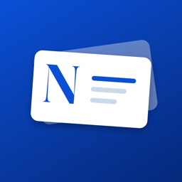

NominoSupport
Questions, bug reports or feature ideas – write to us and we will get back to you.
Email: mikhail.bogovalov@gmail.com
Please include your iPhone model and iOS version. A screenshot helps a lot.
Frequently asked questions
How do I scan a business card or badge?
Tap Add, choose Card or Badge, fit it inside the frame and press the shutter. Check the fields on the review screen and tap Save.
How do I scan a QR code?
Tap Add and choose QR Code. Point the camera at the code – it is read automatically, no shutter needed.
Someone sent me their contact via NameDrop or AirDrop
iOS saves it to the Contacts app. In Nomino tap Add, then ⋯ → From iPhone Contacts and pick that contact.
How do I export my contacts?
On the Contacts tab, optionally filter by event, then tap the share button. Nomino creates a CSV file you can send to Telegram, Mail, Files or AirDrop and open in Excel, Numbers or Google Sheets.
How do I share my own card?
Open My Card. Others can scan the QR code with their phone camera – no app needed – or you can send your card as a .vcf file.
Nomino can't use the camera
Open Settings → Privacy & Security → Camera and turn on Nomino.
Is my data backed up?
Nomino keeps your contacts on your iPhone. They are included in your regular iPhone backup. Export to CSV regularly if you want a separate copy.